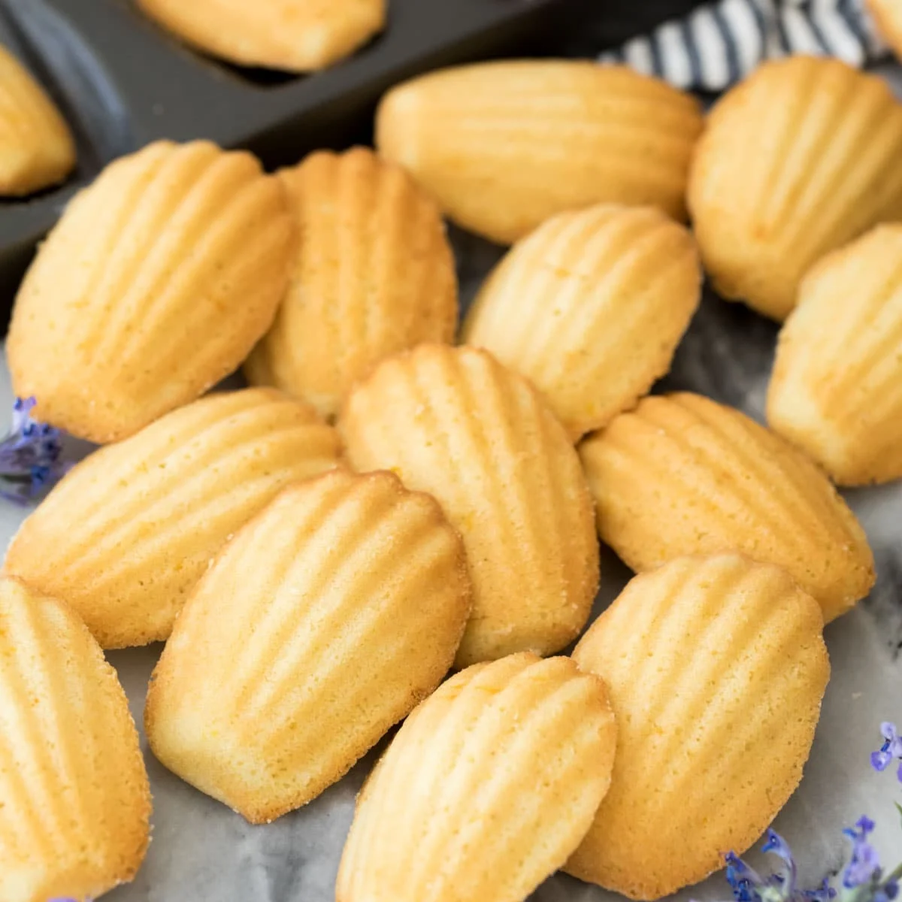

มาเดอลีน

ส่วนผสม
⋆ แป้งเค้ก 160 กรัม
⋆ ผงฟู 1 ช้อนชา
⋆ ไข่ไก่ เบอร์2 3 ฟอง
⋆ น้ำตาลทรายละเอียด 150 กรัม
⋆ เกลือป่น 1/4 ช้อนชา
⋆ ผิวเลมอน 1 ช้อนโต๊ะ
⋆ เนยเค็ม (ละลาย) 160 กรัม
วิธีทำ
1) ตีไข่ไก่ น้ำตาลทราย และเกลือให้เข้ากัน จากนั้นร่อนแป้งกับผงฟูลงไป
แล้วตะล่อมจนเข้ากัน
2) ใส่ผิวเลมอนลงไป
3) จากนั้นใส่เนยเค็มละลายลงไป แบ่งใส่ 2-3รอบ ตะล่อมจนเข้ากัน
แล้วแรปพลาสติกไว้ แช่ตู้เย็นไว้ 30-60นาที
4) หยอดขนมใส่พิมพ์ลงไป
5) นำเข้าอบที่อุณหภูมิ 170 องศาเซลเซียส ใช้ไฟบน-ล่าง 10 นาที
แล้วอบต่อที่อุณหภูมิ 160 องศาเซลเซียส ใช้ไฟบน-ล่าง 15 นาที
หรืออบที่อุณหภูมิ 180 องศาเซลเซียส ใช้ไฟบน-ล่าง 10 นาที
แล้วอบต่อที่อุณหภูมิ 160 องศาเซลเซียส ใช้ไฟบน-ล่าง 8 นาที